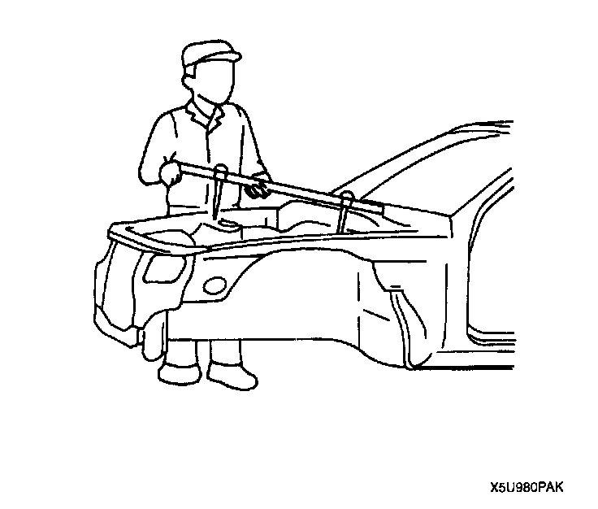
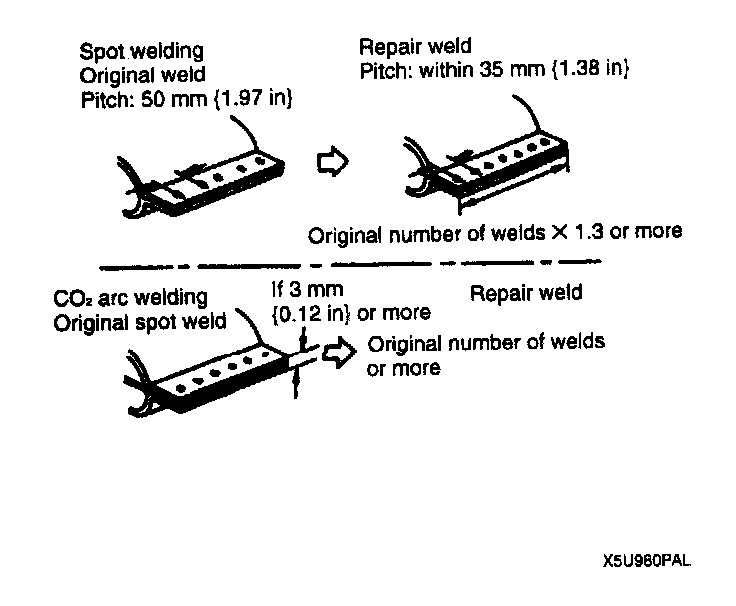
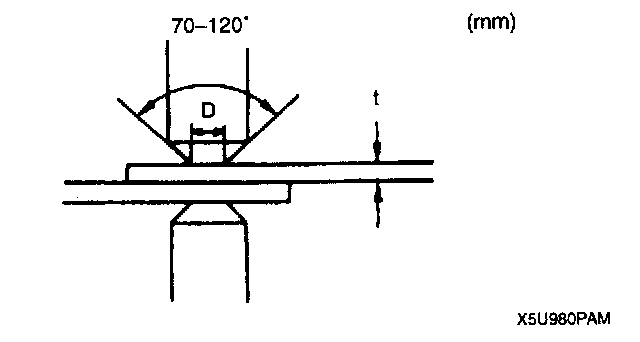
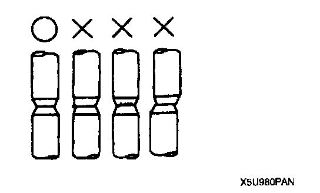
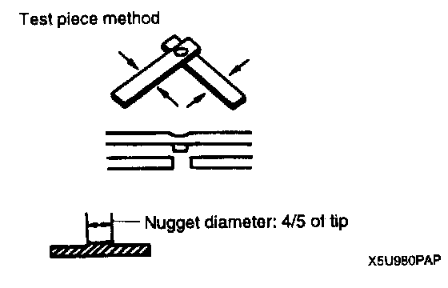

Efficient Installation of Body Panels
EFFICIENT INSTALLATION OF BODY PANELSChecking Preweld Measurements And Watching

- Align to the standard reference dimensions, based upon the body dimensions illustration, so that new parts are installed in the correct position.
Welding Notes

- For the number of weld points, welding should be performed in accordance with the following reference standards.
Spot Welding Notes

- The shape of the spot welder tip is D = (2 x t) + 3. If the upper panel thickness is different from that of the under panel, adjust to the thinner one.

- Because the weld strength is affected by the shape of the spot welder tip, the optimum condition of the tip should always be maintained.
- Spot welds should be made at points other than the originally welded points.

- Before spot welding, make a trial weld using the same material as the body panel to check the weld strength.